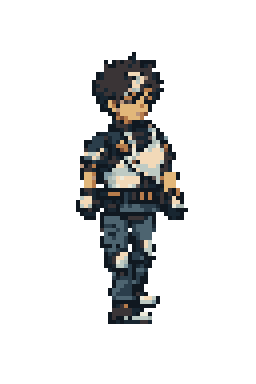

恢复每步下沉与回升，头胸肩同步。头部固定像素取样，保留源图睁眼表情。腿部沿用v008。
按“身体头部固定、一直闭眼”反馈修订的单向试样，外观仍待复审。此页不是整套八方向交付，也未声称达到原生像素美术最终质量。
原地步态 · 4×最近邻
加载部件…
修改前 v008 · 同帧同速
世界位移合成示意：背景按步幅反向移动。支撑相目标采用匀速后移，摆动相抬脚回收；并非Godot接触验收。
分件原稿 · 裁片登记 · 可编辑绑定与轨迹代码 · 返回v005问题对照
实际绑定输出 · 8帧，120ms/帧，正向循环
修改前 v008（同一时长）
